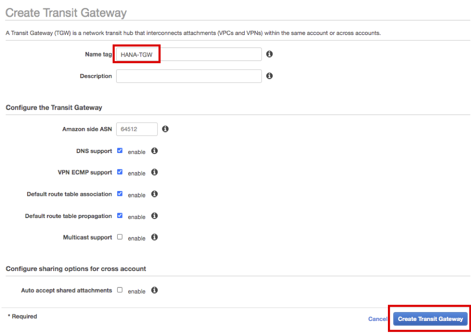
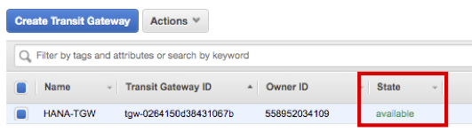
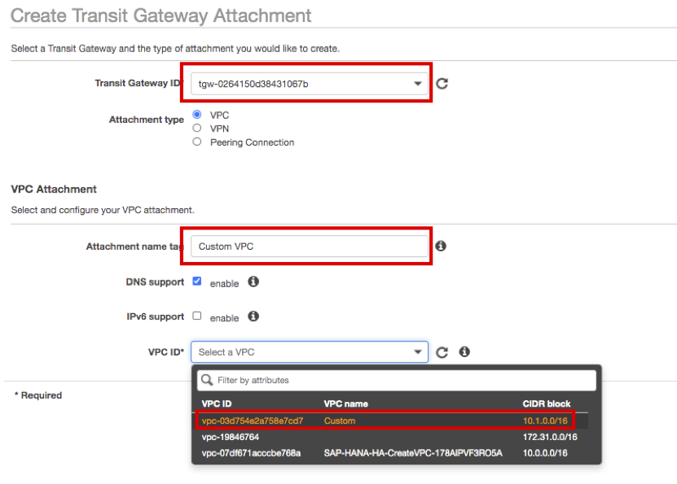
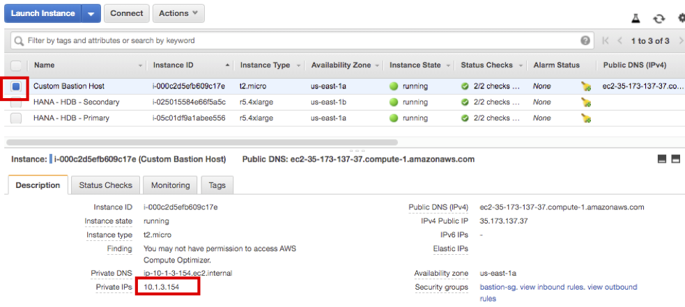

Task 02. Connect to Overlay IP
Multi AZ 환경에서 High Availability Cluster를 구성하게 될 경우, Application Server 및 HANA Database 가 사용하는 VIP는 VPC CIDR 밖에 있는 Overlay IP를 사용합니다. 이것을 다른 VPC 혹은 OnPremise 환경에서 접속하기 위해서는 Transit Gateway를 사용할 수 있습니다. 이번 실습에서는 CloudFormation을 통해 가상의 Custom VPC 환경을 만들고, Transit Gateway를 설정한 다음, Bastion Host통해 HANA Database의 Overlay IP에 연결할 예정입니다.
이번 Task는 총 5 단계로 진행 됩니다.
- Customer VPC 및 Bastion Host 생성
- Transit Gateway 생성 및 설정
- Instance route table 업데이트
- Instance Security Group 업데이트
- Bastion Host와 Overlay IP 연결 테스트
Customer VPC 및 Bastion Host 생성
CloudFormation으로 Custom VPC 및 Bastion Host를 생성합니다.
- AWS Management Console에 로그인 한 뒤 CloudFormation for Customer VPC 에 접속합니다.
- Network Configuration 설정은 기존과 겹치지 않으면 기본 설정을 사용합니다.

- 화면 아래 Capabilities 의 두개의 체크박스를 선택하고 Create stack 버튼을 누릅니다.

- CustomVPC 스택이 생성되었습니다. Status가 CREATE_COMPLTE 될 때까지 기다립니다.
- EC2 Instance Console에 접속 합니다. Bastion Host(Windows Sever 2019)가 Custom VPC - Public Subnet 위에 생성된 것을 확인 하실 수 있습니다.

Transit Gateway 생성 및 설정
SAP HANA VPC 및 Custom VPC를 연결하기 위해 Transit Gateway를 생성합니다.
-
Transit Gateways Console에 접속하여 Transit Gateway를 생성하고 HANA DB 인스턴스의 VPC와 Custom VPC를 연결합니다. 그리고 Overlay IP를 연결하기 위한 엔트리를 해당 Transit Gateway의 Routing Table에 등록합니다.
-
Create Transit Gateway 버튼을 누릅니다.
-
Name Tag에 HANA-TGW 로 입력하고 Create Transit Gateway 버튼을 누릅니다. Close 버튼을 누릅니다. 
-
방금 생성한 HANA-TGW State가 available 이 될때까지 기다립니다. 
-
Transit Gateways Attachment Console에 하여 HANA VPC와, Custom VPC를 연결 합니다. Create Transit Gateway Attachment 버튼을 선택 합니다.

-
이전에 생성한 HANA-TGW 를 선택하고, Attachment name tag는 HANA VPC 를 입력합니다. VPC ID는 SAP-HANA~ 로 시작하는 것을 선택합니다.
-
Subnet ID를 Private Subnet 1,2 로 선택하고,우측 하단에 있는 Create attachment 버튼을 누릅니다. Close 버튼을 누릅니다.

-
다시 Create Transit Gateway Attachment 버튼을 누릅니다.
-
마찬가지로 HANA-TGW 를 선택하고, Attachment name tag는 Custom VPC 를 입력합니다. VPC ID는 Custom 을 선택합니다. 
-
Subnet ID를 Custom Public Subnet AZ1, AZ2 로 선택하고, 우측 하단에 있는 Create attachment 버튼을 누릅니다. Close 버튼을 누릅니다.

-
두 연결이 모두 State 가 available 이 될 때까지 기다립니다.(일정 시간 후 Refresh 버튼을 눌러서 State를 확인합니다.)

-
Transit Gateways Route Tables Console에 접속하여 Overlay IP에 대한 라우팅을 등록 합니다.
-
생성된 라우팅 테이블을 선택하고 아래에 Routes 탭을 선택합니다. Create static route 버튼을 선택 합니다.

-
CIDR은 192.168.1.99/32 를 입력 합니다.
-
Choose attachment는 HANA VPC 를 선택하고, Create static route 버튼을 누릅니다.
-
Close 버튼을 누릅니다.
-
Overlay IP에 대한 static route가 등록 된것을 확인하실 수 있습니다.

Instance route table 업데이트
HANA DB Instance 와 Bastion Host가 Transit Gateway를 통해 서로 통신할 수 있도록, 각각의 route table을 업데이트 해줍니다.
- Route Tables Console에 접속합니다.
- HANA DB Instance 의 route table 부터 업데이트 합니다. Private subnet route table 를 선택하고 아래 Routes 탭을 선택합니다. 다음은 Edit routes 버튼을 선택합니다.
- Add routes 버튼을 선택한 다음, Destination을 10.1.0.0/16 로 입력하고, Target을 Transit Gateway 로 선택합니다.
- HANA-TGW 를 선택하고 Save routes 버튼을 선택합니다.


- Close 버튼을 선택합니다.
- 다음은 Bastion Host의 route table을 업데이트 합니다. Custom Public Routes 를 선택하고 아래 Routes 탭을 선택합니다. 다음은 Edit routes 버튼을 선택합니다.
- Add routes 버튼을 선택한 다음, Destination을 10.0.0.0/16 로 입력하고, Target을 Transit Gateway 로 선택합니다. 다음은 HANA-TGW 를 선택합니다.
- 다시 Add routes 버튼을 선택한 다음, Destination을 192.168.1.99/32 로 입력하고, Target을 Transit Gateway 로 선택합니다. 다음은 HANA-TGW 를 선택합니다.
- 두 routes 가 등록된 것을 확인하고 Save routes 버튼을 선택합니다.

- Close 버튼을 누릅니다.
Instance Security Group 업데이트
Primary 및 Secondary HANA DB 인스턴스의 Security Group에 Bastion Host에 대한 인바운트 트래픽을 허용해 줍니다.
- 우선 Bastion Host의 IP를 확인 합니다. EC2 Instance Console에 접속 합니다. Custom Bastion Host 의 Private IP를 확인 합니다. (e.g 10.1.3.154) 
- Primary 인스턴스 부터 업데이트 합니다. HANA-HDB-Primary 인스턴스를 선택하고, 아래 Security Groups 링크를 클릭 합니다.

- 하단의 Inbound rules 탭을 선택하고, Edit inbound rules 버튼을 선택합니다.

- 제일 아래 Add rule 버튼을 선택하고, Type은 All traffic 를 선택하고 Source는 위에서 찾은 Bastion Host의 CIDR을 입력해 줍니다. (e.g 10.1.3.154/32)
- 실습 환경이기 때문에, Bastion Host를 All traffic 으로 허용 하였습니다. 실제 환경에서는 필요한 포트만 허용 해주는 것을 권장 드립니다.

- 실습 환경이기 때문에, Bastion Host를 All traffic 으로 허용 하였습니다. 실제 환경에서는 필요한 포트만 허용 해주는 것을 권장 드립니다.
- 제일 아래 Save rules 버튼을 선택합니다.
- Primary Instance와 동일하게 Secondary Instance에 Security Group에도 업데이트 합니다. 다시 EC2 Instance Console에 접속 합니다.
- HANA-HDB-Secondary 인스턴스를 선택하고, 아래 Security Groups 링크를 클릭 합니다.

- 하단의 Inbound rules 탭을 선택하고, Edit inbound rules 버튼을 선택합니다.
- 제일 아래 Add rule 버튼을 선택하고, Type은 All traffic 를 선택하고 Source는 위에서 찾은 Bastion Host의 CIDR을 입력해 줍니다. (e.g 10.1.3.154/32)
- 실습 환경이기 때문에, Bastion Host를 All traffic 으로 허용 하였습니다. 실제 환경에서는 필요한 포트만 허용 해주는 것을 권장 드립니다.
- 실습 환경이기 때문에, Bastion Host를 All traffic 으로 허용 하였습니다. 실제 환경에서는 필요한 포트만 허용 해주는 것을 권장 드립니다.
- 제일 아래 Save rules 버튼을 선택합니다.
Bastion Host와 Overlay IP 연결 테스트
Bastion Host에 접속해서 Overlay IP와 연결 가능한지 확인하기 위해 Ping 테스트를 수행 합니다.
- EC2 Instance Console에 접속 합니다.Custom Bastion Host 의 Public IP를 확인 합니다. (e.g 35.173.137.37)

- Custom Bastion Host 를 선택하고 Connect 버튼을 누릅니다.

- Get Password 를 선택 합니다.
- 파일 선택 버튼을 선택하고, Lab01에서 저장한 SAP-ImmersionDay-Lab.pem 파일을 선택 합니다.
- OS에 따라 아래 화면이 다르게 보일 수 있습니다. 아래 캡처 화면은 MacBook 화면 입니다.


- OS에 따라 아래 화면이 다르게 보일 수 있습니다. 아래 캡처 화면은 MacBook 화면 입니다.
- Decrypt Password 버튼을 선택해서, Administrator Password를 확인 합니다.(e.g qRPIUIXXSI5ceUhLuntol%WhZ&WFzCT$)


- Close 버튼을 누릅니다.
- 원격접속 프로그램을 사용하여 Bastion Host에 접속합니다.
- 성공적으로 접속이 되면, Search 창에서 Windows PowerShell을 검색하고, 실행합니다.

- PowerShell이 실행되면 Overlay IP와 통신이 되는지 확인하기 위해 ping 192.168.1.99 를 실행 합니다.

PowerShell은 종료하고, 원격접속을 유지한 상태로 Task03을 진행합니다.
PowerShell은 종료하고, 원격접속을 유지한 상태로 Task03을 진행합니다.